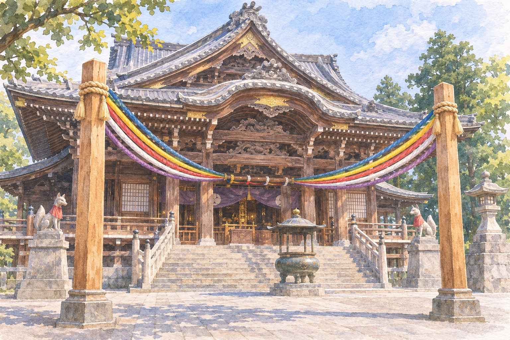

Toyokawa Inari is not a shrine, and the fox is not the god. Once every 72 years the temple opens its inner hall, and for 23 days in November 2026 it is open. The last day is Monday 23 November.
豊川稲荷 御開帳 Toyokawa Inari gokaichōToyokawa, Aichi · about an hour from NagoyaFacts checked 8 November 2026
You have done Fushimi Inari, probably at dawn, probably twice. You know the foxes, the red gates, the rice offerings. Toyokawa Inari (豊川稲荷, Toyokawa Inari) looks like the same family and is not. Its formal name is Myōgon-ji (豊川閣妙厳寺, Toyokawa-kaku Myōgon-ji), and it is a Sōtō Zen Buddhist temple, which is why a mikoshi (portable shrine) procession through its grounds, coming up below, is the odd detail.
Most days there is nothing to unlock here, just a big, busy precinct with a lane of rice-ball shops outside. From 1 to 23 November 2026 the temple is holding a gokaichō (御開帳), a ceremonial opening of images that are normally closed away. The previous one was in 1954. I found no English-language write-up of this one, only the temple's and Aichi Prefecture's Japanese pages, which is why this one is worth getting on a train for in the next two weeks.
Why 72 years午年 · umadoshi, the Year of the Horse
The temple's own explanation is a calendar coincidence. The present main hall was finished in 1930, the previous gokaichō was in 1954, and this one is in 2026. All three are Horse years, which come round every twelve. The temple says the Horse connection is what made it possible to hold the opening now. The gaps are 24 and 72 years. The temple gives no fixed interval.
Three Horse years, one 72-year wait; a larger opening is already pencilled in for 2030.
The temple's story goes back to 1441, when it was founded, according to Japanese sources, by the Zen monk Tōkai Gien (東海義易). Its deity is Toyokawa Dakini-shinten (豊川吒枳尼眞天), a woman who rides a white fox and carries a sheaf of rice and a jewel. Dakini is a figure that came from India with Buddhism and later merged in popular worship with Inari. The fox is her mount, and the name "Inari" is the popular label, not the temple's.
What is actually open御縁柱・特別諸堂拝観 · goenbashira, tokubetsu shodō haikan
Be precise about what you are getting. The true image, a hidden Buddha (hibutsu, 秘仏), stays closed. What is shown is the omaedachi (御前立尊像), the stand-in statue placed in front of it. The temple itself says the hidden deity's power is so strong that the doors are normally kept shut.
Outside the main hall stand two tall pillars, the goenbashira (御縁柱). Five-coloured cords, standing for earth, water, fire, wind and space, run from them to both images. You may touch the pillars. No sign-up, no fee.
Four halls are open to paying visitors that are normally closed or restricted:
Main hall interior (本殿): the room normally reserved for people receiving a prayer, with a copper image you can touch. ¥500.
Hattō (法堂): the temple's main Buddha hall, with a thousand-armed Kannon. ¥500.
Mandō (万堂): a Fudō Myōō said to have been Toyotomi Hideyoshi's personal Buddha. ¥300.
Saishōden (最祥殿): twelve ink-painted sliding-door panels by the artist Nishimoto Yūki, "New Chōjū-giga", a new work inspired by the famous frolicking-animals scrolls. ¥500.
The set ticket saves ¥300 only if you do all four, and cash is the only payment the desk takes.
Say at the ticket desk: セット券をください (setto-ken o kudasai). Buy the set ticket. Children of junior-high age and under are cheaper. There is no booking, you pay on the day, and the temple says cash only.
Getting there: Nagoya → Meitetsu line to Toyokawa-Inari Station (豊川稲荷駅), about 1 hr 15; the JR Toyokawa Station (豊川駅) is next door. Sources disagree on the walk, from 5 to 10 minutes. One route search in October gave ¥1,270 to ¥1,480 one way. Check the day's timetable.
When: 1–23 November 2026. Viewing desks 8:00–16:00. On Friday, Saturday, Sunday and holidays the main-hall interior stays open until 20:00.
Reality check: Cash only. On 21 and 22 November the main-hall interior closes 13:00–15:00 for the festival.
Pay for a prayer, sit in the room御祈祷 · go-kitō
This is the one part with a real price, so decide beforehand. A prayer in the inner chamber, with the stand-in statue close up, normally costs ¥30,000 per person according to Aichi Prefecture's page. During the gokaichō it starts at ¥5,000, which includes a wooden prayer plate and a vegetarian meal (gozen settai, 御膳接待) in the guest hall. The meal has to be booked online. Prayers are taken 8:00–14:30 on 2–20 November and 8:00–13:30 on 21–23 November, and pay in cash on the day.
Say: ご祈祷をお願いします (go-kitō o onegai shimasu), then follow the staff; they will tell you where to sit. I found no English page for the prayer, so expect to be led by gesture.
After darkヨルモウデ · yoru-mōde
On Fridays, Saturdays and Sundays of the gokaichō the grounds are lit from 17:00 to 21:00. The garden, the covered corridor and the new museum of Nishimoto's work have paid evening openings (the museum is ¥1,500 for adults and is open 10:00–16:00 by day). Behind the main hall is the Reikozuka (霊狐塚), where over a thousand stone fox statues stand. I do not know whether it is lit, so see it in daylight.
The window that matters is 8:00–14:30: after the prayer desk closes, only the evening openings are left.
Light-red block: the evening lighting, 17:00–21:00 on Fridays to Sundays. Regular hall hours are from Aichi Now's standing page and may be adjusted during the gokaichō.

AI-generated illustration — not an on-site photograph. An imagined scene inspired by this section, not an accurate depiction of the real place, objects or event.
21 and 22 November: the festival御開帳大祭 · gokaichō taisai
The yearly autumn festival, 秋季大祭, becomes the gokaichō taisai on 21 and 22 November. A mikoshi carrying the deity moves through the grounds with child attendants (chigo, お稚児さん) and monks. Mikoshi are normally a shrine thing, and this is a Zen temple, so you are watching a Buddhist procession that borrows a Shinto vehicle. Lanterns, including one about 10 m high and 5 m across according to the prefectural page, are lit from 17:00 to 20:00. If you can only come one day, this is the weekend with the most going on and probably the most people. I do not know the crowd size and could not find any estimate.
When: Saturday 21 and Sunday 22 November, festival 9:00–16:00.
Reality check: The main-hall interior is closed 13:00–15:00 both days. Parking is a paid lot and limited, so take the train.
The honest part
You are not seeing the hidden image. You are seeing the stand-in, and the main hall interior, which is normally closed but not secret. If you expected a sacred object unveiled under glass, this is subtler.
I do not have a source for how long the lines are, whether the prayer desks fill, or how the set ticket works on a holiday weekend. The temple's Japanese pages are the authority, and timings may change during the 23 days. The Nishimoto museum and evening openings cost extra and add up. Plan a half day. A ¥1,500 ticket plus a ¥5,000 prayer is the realistic budget, before the museum or the meal extras.
If you only have one day
Saturday 14 November, avoiding the festival weekend. Train times are approximate; check them.
Meitetsu Nagoya Station, line toward Toyokawa-Inari Station.
Arrive, walk to the main gate (open from 5:00). Touch the goenbashira.
Buy the set ticket and do the four halls in this order: Saishōden paintings, Hattō, Mandō, main hall.
Prayer desk, if you want one, before it closes at 14:30. Cash.
Lunch on the shop lane outside the gate. Compare a few inari-zushi; some shops top theirs with things like eel.
Walk to the stone foxes behind the main hall.
Stay for the lighting if the weather is good. The main hall interior is open until 20:00 on Saturdays. Train back in time for the last Meitetsu service.
Short on time? Skip the prayer and the evening: the pillars and the four halls fit in two hours.